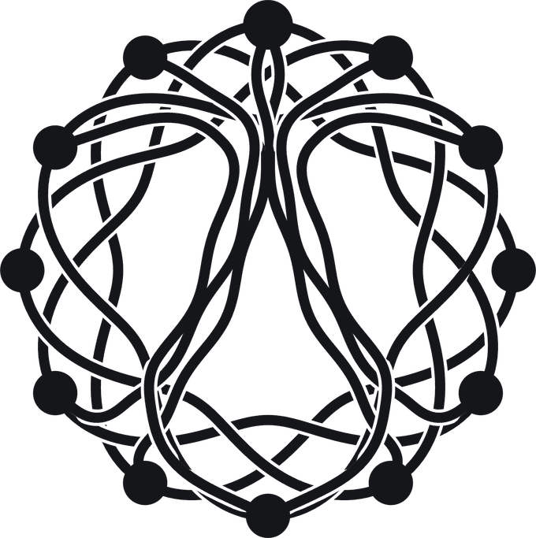

Assistenterna sammanfattar det de hittar. Är bilden ofullständig blir svaret det också.
Webb, karta, telefon, omdömen, annonser, kundregister. Var för sig. Ingen som ser helheten.
Egna AI-agenter driver arbetet varje vecka, och varje avdelning ser vad de andra gör.

ALFRED Enterprise-marknadsföring för lokala företag